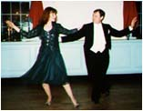

Foxtrot
Big Band Music
Big bands are once again making their mark on social dance. Most of the bands' repertoires include Fred & Ginger style foxtrots such as "Dancing Cheek to Cheek" and "Let's Face the Music and Dance." It is indeed unfortunate that the term Foxtrot has gotten a such bad rap, and, that for some reason, the only dance form it seems people do to the big bands today is the Swing.
Foxtrot is different from Swing
Historically and musically, the most popular form of dancing during the 40s was not Swing, but Foxtrot. Indeed, only about 20 percent of those active dancers knew how to swing or were sufficiently avant-garde to try it! Though Swing has its own charm to enjoy, the Fred & Ginger style Foxtrot conveys the romance and invigorating elegance that Swing cannot.